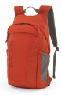

这是一款简洁、户外型的双肩背包，拥有多功能携带方式，确保器材安全取用，为初学者或休闲型摄影师提供便利。带衬垫的前方暗袋采用柔软轻型的面料，防霉变而又耐磨。带衬垫的网面背垫柔软、透气，整天背负也倍感舒适。宽敞的上部隔层，提供充足的空间存放个人物品。高而深的弹性网面侧袋可任意存放水瓶或在抓拍时随手放置额外器材。最重要的是， 多功能的相机隔层提供多种组合可存放器材及平板电脑，并有符合人体工程学的背负系统。底部器材仓的背后开盖便于取用及保护器材。可拆卸、带衬垫的相机隔层带防风盖和手提抓手，可整套取出；把相机隔层取出，可打通上下隔层，把包变为一个全功能型的户外双肩背包。